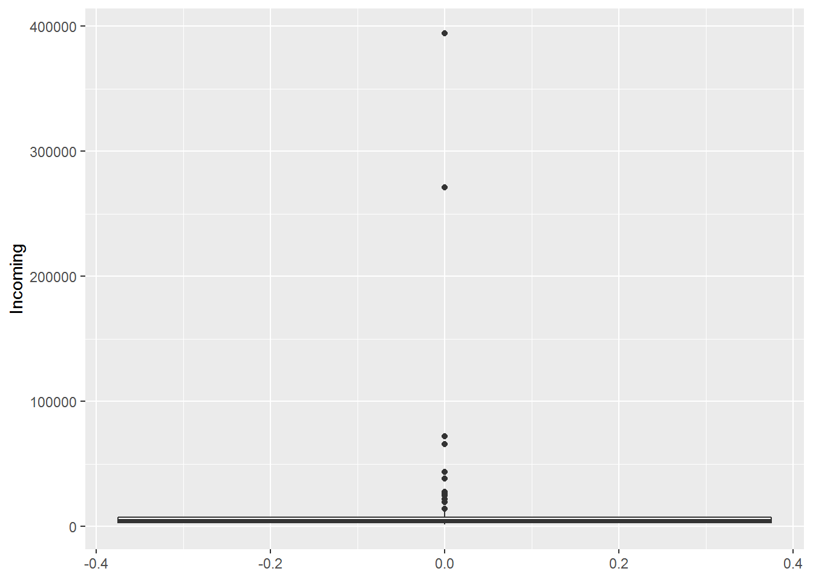
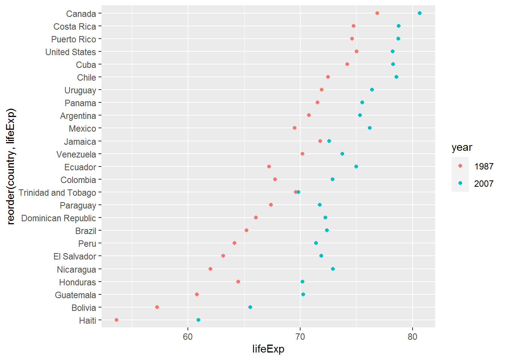
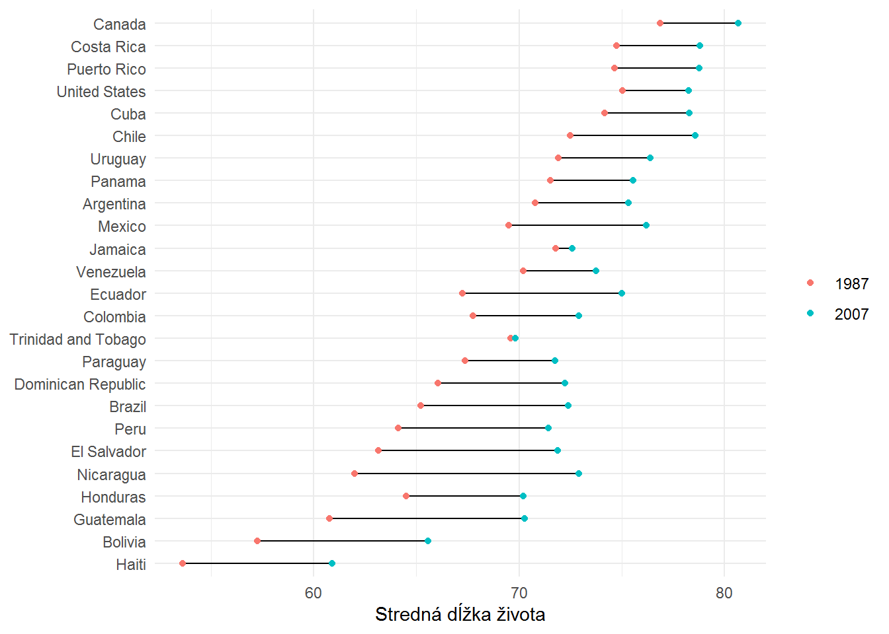
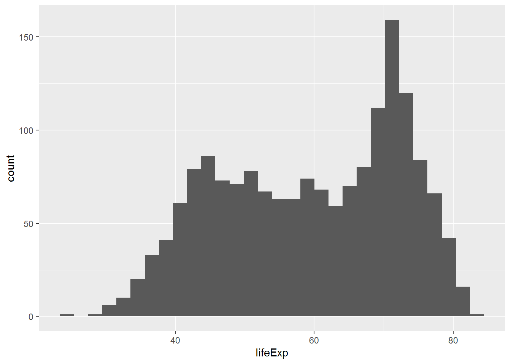
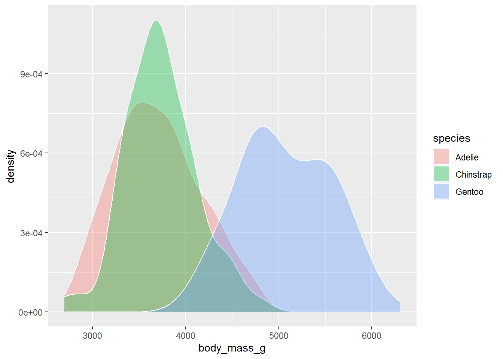
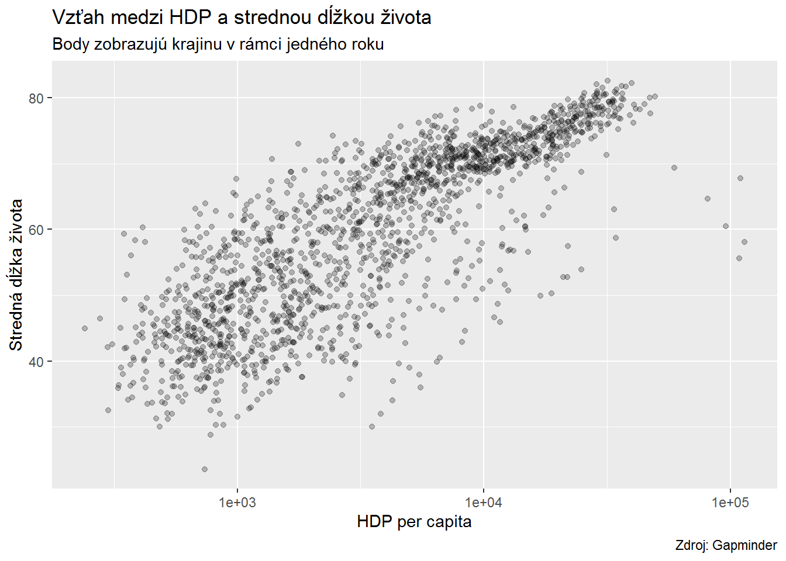
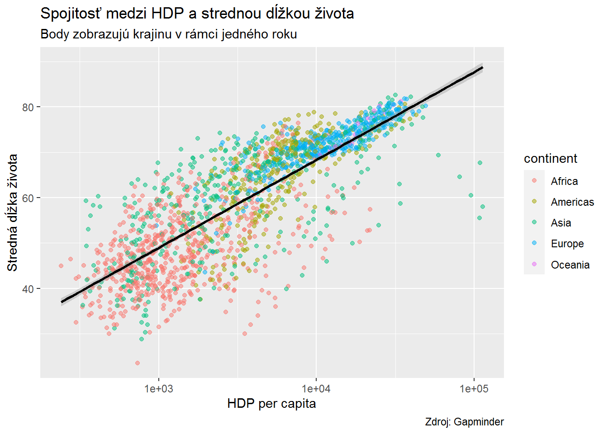
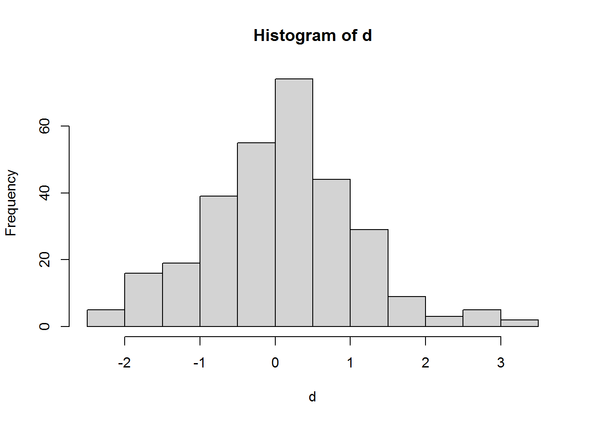

6 Štatistika v R
R je často označované za softvér, ktorý slúži na štatistické výpočty a modelovanie. Aj keď sa jeho zameranie od začiatkov zmenilo, štatistika zostáva dôležitou súčasťou R. V tejto časti si ukážeme ako sa robia viaceré jednoduché štatistické pohľady ako aj štatistické testy. Na záver sa pozrieme na lineárnu regresiu a ukážeme si, ako sa dá v R skontrolovať naplnenie jej asumpcií.
6.1 Popisné štatistiky
V jednej z predošlých častí sme si ukázali, ako sa dajú vytvoriť základné popisné štatistiky. Teraz na to nadviažeme, keď si zo surových dát vytvoríme dataset s popisnou štatistikou, ktorú si budeme vizualizovať. Zároveň si aj ukážeme, ako ľahko je možné dopočítať popisné štatistiky prostredníctvom knižnice psych a Hmisc.
6.2 Deskriptívy za využitia dplyr
dplyr je veľmi nápomocná knižnica, ktorá nám umožňuje prepočítavať rôzne veci v dátach. V príklade si ukážeme, ako je možné prostredníctvom nej dopočítať priemer, medián, minimum, maximum, štandardnú odchýlku, n-kvantil, šikmosť a špicatosť.
V prvom rade si musíme načítať dáta. Budeme pracovať s dátami o súdoch za roky 2021 a 2020, pričom si vyfiltrujeme nepotrebné premenné.
options(scipen = 999)
library(tidyverse)
library(openxlsx)
sudy <- read.xlsx("./data/sudy_2020-2021.xlsx", 1) %>%
select(-ends_with("input"), -ends_with("output"))
head(sudy)## Court Year nJudges Assistant Judicial.officer Secretary
## 1 OS Bánovce nad Bebravou 2020 4.666667 6.75 4.000000 5.00000
## 2 OS Bánovce nad Bebravou 2021 5.000000 7.00 4.000000 5.00000
## 3 OS Bardejov 2020 9.583333 12.00 9.833333 6.00000
## 4 OS Bardejov 2021 10.833333 12.00 10.000000 6.00000
## 5 OS Bratislava II 2020 27.916667 34.00 24.916667 18.41667
## 6 OS Bratislava II 2021 24.500000 33.00 23.500000 18.50000
## Expenditure IncomingWeighted Incoming WeightedDecided Decided Region
## 1 171806.6 1614.312 1782 1493.960 1660 KS Trenčín
## 2 201655.7 1296.019 1631 1342.599 1520 KS Trenčín
## 3 296897.8 2567.602 3147 2765.469 3136 KS Prešov
## 4 302411.3 2372.854 3089 2552.165 3264 KS Prešov
## 5 736132.1 9714.706 10397 8882.577 9434 KS Bratislava
## 6 638335.3 8414.117 9433 8706.625 9677 KS Bratislava
## nEmployees Pending
## 1 15.75000 690
## 2 16.00000 801
## 3 27.83333 1489
## 4 28.00000 1314
## 5 77.33333 5693
## 6 75.00000 5449Sumárne štatistiky si vieme vyrobiť pre jednotlivé premenné. Na vypčítanie šikmosti a špicatosti si nainštalujeme a načítame knižnicu moments.
install.packages("moments")library(moments)
incoming_sum <- sudy %>%
summarize(Obs = n(),
Sum = sum(Incoming),
Mean = mean(Incoming),
Median = median(Incoming),
SD = sd(Incoming),
Min = min(Incoming),
Max = max(Incoming),
Skew = skewness(Incoming),
Kurt = kurtosis(Incoming),
q25 = quantile(Incoming, 0.25),
q75 = quantile(Incoming, 0.75))
incoming_sum## Obs Sum Mean Median SD Min Max Skew Kurt q25
## 1 108 1580274 14632.17 5059 46147.78 1631 394457 6.877842 52.36372 3154
## q75
## 1 7628.5Tieto údaje je samozrejme možné prepočítať v rámci kategorickej premennej alebo kombinácie viacerých kategorických prememnných.
incoming_sum_region <- sudy %>%
group_by(Region) %>%
summarize(Obs = n(),
Sum = sum(Incoming),
Mean = mean(Incoming),
Median = median(Incoming),
SD = sd(Incoming),
Min = min(Incoming),
Max = max(Incoming),
Skew = skewness(Incoming),
Kurt = kurtosis(Incoming),
q25 = quantile(Incoming, 0.25),
q75 = quantile(Incoming, 0.75)) %>%
ungroup()
incoming_sum_region## # A tibble: 8 x 12
## Region Obs Sum Mean Median SD Min Max Skew Kurt q25 q75
## <chr> <int> <dbl> <dbl> <dbl> <dbl> <dbl> <dbl> <dbl> <dbl> <dbl> <dbl>
## 1 KS Ba~ 16 726255 45391. 4825 1.14e5 2469 394457 2.44 7.25 3042. 6025.
## 2 KS Br~ 14 216619 15473. 7940 2.29e4 3135 72267 2.00 5.13 4197. 9486.
## 3 KS Ko~ 14 147409 10529. 7661 7.42e3 3586 26651 1.43 3.76 6390. 12246
## 4 KS Ni~ 10 98867 9887. 6242 9.36e3 3469 27572 1.44 3.18 5269. 6887.
## 5 KS Pr~ 16 99516 6220. 3490 7.40e3 2052 24983 2.17 5.88 2873. 5110.
## 6 KS Tr~ 12 76316 6360. 4335 6.36e3 1631 19559 1.56 3.79 2180 6134.
## 7 KS Tr~ 12 90821 7568. 4659 7.71e3 2271 25287 1.61 4.00 2998. 7262.
## 8 KS Ži~ 14 124471 8891. 3766. 1.38e4 2099 43832 2.04 5.25 2726. 5287incoming_sum_region_year <- sudy %>%
group_by(Region, Year) %>%
summarize(Obs = n(),
Sum = sum(Incoming),
Mean = mean(Incoming),
Median = median(Incoming),
SD = sd(Incoming),
Min = min(Incoming),
Max = max(Incoming),
Skew = skewness(Incoming),
Kurt = kurtosis(Incoming),
q25 = quantile(Incoming, 0.25),
q75 = quantile(Incoming, 0.75)) %>%
ungroup()
incoming_sum_region_year## # A tibble: 16 x 13
## Region Year Obs Sum Mean Median SD Min Max Skew Kurt q25
## <chr> <dbl> <int> <dbl> <dbl> <dbl> <dbl> <dbl> <dbl> <dbl> <dbl> <dbl>
## 1 KS Ba~ 2020 8 301225 37653. 4777 9.44e4 2469 271334 2.27 6.14 3014.
## 2 KS Ba~ 2021 8 425030 53129. 4906. 1.38e5 2545 394457 2.27 6.14 3100.
## 3 KS Br~ 2020 7 112575 16082. 8226 2.49e4 3135 72267 1.99 5.05 4523
## 4 KS Br~ 2021 7 104044 14863. 7654 2.27e4 3166 65984 1.99 5.06 4404.
## 5 KS Ko~ 2020 7 74321 10617. 7620 7.72e3 3586 26431 1.37 3.61 6672.
## 6 KS Ko~ 2021 7 73088 10441. 7702 7.72e3 3686 26651 1.50 3.92 6700.
## 7 KS Ni~ 2020 5 48759 9752. 5954 9.96e3 3469 27450 1.45 3.18 5234
## 8 KS Ni~ 2021 5 50108 10022. 6530 9.89e3 3666 27572 1.44 3.17 5375
## 9 KS Pr~ 2020 8 49824 6228 3547 7.67e3 2052 24983 2.17 5.88 2873.
## 10 KS Pr~ 2021 8 49692 6212. 3490 7.65e3 2101 24916 2.17 5.88 2891
## 11 KS Tr~ 2020 6 37739 6290. 4086 6.69e3 1782 19552 1.57 3.81 2548
## 12 KS Tr~ 2021 6 38577 6430. 4502 6.65e3 1631 19559 1.54 3.76 2738.
## 13 KS Tr~ 2020 6 47068 7845. 4618 8.76e3 2271 25287 1.60 3.85 3003.
## 14 KS Tr~ 2021 6 43753 7292. 4702. 7.32e3 2337 21757 1.54 3.75 3152.
## 15 KS Ži~ 2020 7 64649 9236. 3718 1.53e4 2127 43832 2.02 5.11 2742.
## 16 KS Ži~ 2021 7 59822 8546 3892 1.33e4 2099 38509 2.01 5.09 2745
## # ... with 1 more variable: q75 <dbl>
## # i Use `colnames()` to see all variable namesĎalšou možnosťou je pozrieť sa na všetky premenné v datasete. Na to slúži funkcia summarize a trocha zložitejších úprav.
incoming_sum_all <- sudy %>%
summarize(across(where(is.numeric),
.fns = list(
Obs = length,
Sum = sum,
Mean = mean,
Median = median,
SD = sd,
Min = min,
Max = max,
Skew = skewness,
Kurt = kurtosis,
q25 = ~quantile(., 0.25),
q75 = ~quantile(., 0.75)
))) %>%
pivot_longer(everything(), names_sep = "_", names_to = c( "variable", ".value"))
incoming_sum_all ## # A tibble: 12 x 12
## variable Obs Sum Mean Median SD Min Max Skew Kurt q25
## <chr> <int> <dbl> <dbl> <dbl> <dbl> <dbl> <dbl> <dbl> <dbl> <dbl>
## 1 Year 108 2.18e5 2.02e3 2.02e3 5.02e-1 2.02e3 2.02e3 0 1 2.02e3
## 2 nJudges 108 1.66e3 1.54e1 1.31e1 8.15e+0 4.67e0 3.6 e1 1.03 3.15 9.65e0
## 3 Assistant 108 2.27e3 2.10e1 1.79e1 1.17e+1 6.75e0 5.46e1 1.20 3.77 1.2 e1
## 4 Judicial~ 108 1.91e3 1.77e1 1.35e1 2.00e+1 4 e0 1.43e2 4.77 29.6 8.98e0
## 5 Secretary 108 1.27e3 1.17e1 9.5 e0 7.55e+0 4 e0 5.06e1 2.73 13.6 7 e0
## 6 Expendit~ 108 5.44e7 5.04e5 4.65e5 2.77e+5 1.64e5 1.57e6 1.74 6.96 2.90e5
## 7 Incoming~ 108 7.41e5 6.86e3 4.11e3 8.43e+3 1.30e3 5.36e4 3.13 14.3 2.62e3
## 8 Incoming 108 1.58e6 1.46e4 5.06e3 4.61e+4 1.63e3 3.94e5 6.88 52.4 3.15e3
## 9 Weighted~ 108 7.72e5 7.14e3 4.20e3 9.00e+3 1.30e3 5.37e4 3.00 12.8 2.64e3
## 10 Decided 108 1.67e6 1.55e4 4.92e3 4.72e+4 1.52e3 3.93e5 6.55 48.3 3.26e3
## 11 nEmploye~ 108 5.44e3 5.04e1 4.18e1 3.75e+1 1.58e1 2.48e2 3.00 15.1 2.80e1
## 12 Pending 108 3.92e5 3.63e3 2.40e3 3.45e+3 6.53e2 1.73e4 2.26 8.13 1.56e3
## # ... with 1 more variable: q75 <dbl>
## # i Use `colnames()` to see all variable names6.3 Deskriptívy za využitia psych
Ako je možné vidieť, keď chceme komplexnejší obraz na popisné štatistiky viacerých premenných, tak prídeme na to, že zložitosť príkazov sa zvyšuje. Na uľahčenie práce ale existujú špecializované knižnice. Knižnica psych Vám bez zložitého kódovania vypočíta všetky základné popisné štatistiky.
install.packages("psych")library(psych)
describe(sudy)## vars n mean sd median trimmed mad
## Court* 1 108 27.50 15.66 27.50 27.50 20.02
## Year 2 108 2020.50 0.50 2020.50 2020.50 0.74
## nJudges 3 108 15.39 8.15 13.12 14.40 5.93
## Assistant 4 108 20.98 11.70 17.88 19.38 8.71
## Judicial.officer 5 108 17.68 20.01 13.54 14.06 6.73
## Secretary 6 108 11.74 7.55 9.50 10.62 3.71
## Expenditure 7 108 504126.26 277275.54 464595.16 467929.92 257513.19
## IncomingWeighted 8 108 6860.35 8431.42 4113.61 4993.16 2348.44
## Incoming 9 108 14632.17 46147.78 5059.00 6421.72 2982.25
## WeightedDecided 10 108 7144.78 8998.26 4196.29 5089.47 2454.58
## Decided 11 108 15485.33 47166.83 4924.50 6537.22 2735.40
## Region* 12 108 4.39 2.36 4.50 4.36 3.71
## nEmployees 13 108 50.39 37.48 41.79 44.08 19.71
## Pending 14 108 3631.44 3452.91 2396.00 2931.43 1461.84
## min max range skew kurtosis se
## Court* 1.00 54.00 53.00 0.00 -1.23 1.51
## Year 2020.00 2021.00 1.00 0.00 -2.02 0.05
## nJudges 4.67 36.00 31.33 1.01 0.09 0.78
## Assistant 6.75 54.58 47.83 1.19 0.70 1.13
## Judicial.officer 4.00 143.42 139.42 4.70 26.05 1.93
## Secretary 4.00 50.58 46.58 2.69 10.31 0.73
## Expenditure 164467.75 1574331.24 1409863.49 1.72 3.84 26680.85
## IncomingWeighted 1296.02 53588.60 52292.58 3.09 11.02 811.31
## Incoming 1631.00 394457.00 392826.00 6.78 48.40 4440.57
## WeightedDecided 1302.35 53715.06 52412.71 2.96 9.60 865.86
## Decided 1520.00 393359.00 391839.00 6.46 44.40 4538.63
## Region* 1.00 8.00 7.00 0.05 -1.30 0.23
## nEmployees 15.75 247.58 231.83 2.96 11.79 3.61
## Pending 653.00 17332.00 16679.00 2.23 4.98 332.26Jednoduché nie? Pridajme si ešte kvantily
describe(sudy, quant = c(.25, .75))## vars n mean sd median trimmed mad
## Court* 1 108 27.50 15.66 27.50 27.50 20.02
## Year 2 108 2020.50 0.50 2020.50 2020.50 0.74
## nJudges 3 108 15.39 8.15 13.12 14.40 5.93
## Assistant 4 108 20.98 11.70 17.88 19.38 8.71
## Judicial.officer 5 108 17.68 20.01 13.54 14.06 6.73
## Secretary 6 108 11.74 7.55 9.50 10.62 3.71
## Expenditure 7 108 504126.26 277275.54 464595.16 467929.92 257513.19
## IncomingWeighted 8 108 6860.35 8431.42 4113.61 4993.16 2348.44
## Incoming 9 108 14632.17 46147.78 5059.00 6421.72 2982.25
## WeightedDecided 10 108 7144.78 8998.26 4196.29 5089.47 2454.58
## Decided 11 108 15485.33 47166.83 4924.50 6537.22 2735.40
## Region* 12 108 4.39 2.36 4.50 4.36 3.71
## nEmployees 13 108 50.39 37.48 41.79 44.08 19.71
## Pending 14 108 3631.44 3452.91 2396.00 2931.43 1461.84
## min max range skew kurtosis se
## Court* 1.00 54.00 53.00 0.00 -1.23 1.51
## Year 2020.00 2021.00 1.00 0.00 -2.02 0.05
## nJudges 4.67 36.00 31.33 1.01 0.09 0.78
## Assistant 6.75 54.58 47.83 1.19 0.70 1.13
## Judicial.officer 4.00 143.42 139.42 4.70 26.05 1.93
## Secretary 4.00 50.58 46.58 2.69 10.31 0.73
## Expenditure 164467.75 1574331.24 1409863.49 1.72 3.84 26680.85
## IncomingWeighted 1296.02 53588.60 52292.58 3.09 11.02 811.31
## Incoming 1631.00 394457.00 392826.00 6.78 48.40 4440.57
## WeightedDecided 1302.35 53715.06 52412.71 2.96 9.60 865.86
## Decided 1520.00 393359.00 391839.00 6.46 44.40 4538.63
## Region* 1.00 8.00 7.00 0.05 -1.30 0.23
## nEmployees 15.75 247.58 231.83 2.96 11.79 3.61
## Pending 653.00 17332.00 16679.00 2.23 4.98 332.26
## Q0.25 Q0.75
## Court* 14.00 41.00
## Year 2020.00 2021.00
## nJudges 9.65 17.33
## Assistant 12.00 23.69
## Judicial.officer 8.98 17.21
## Secretary 7.00 12.00
## Expenditure 289706.01 599282.18
## IncomingWeighted 2619.60 6128.95
## Incoming 3154.00 7628.50
## WeightedDecided 2639.96 6009.60
## Decided 3263.75 7331.00
## Region* 2.00 6.00
## nEmployees 27.98 51.85
## Pending 1558.00 3822.00A pozrime sa na to, aké sú popisné štatistiky pre jednotlivé roky.
describe(sudy ~ Year, quant = c(.25, .75))##
## Descriptive statistics by group
## group: 2020
## vars n mean sd median trimmed mad
## Court* 1 54 27.50 15.73 27.50 27.50 20.02
## Year 2 54 2020.00 0.00 2020.00 2020.00 0.00
## nJudges 3 54 15.65 8.29 13.88 14.70 6.18
## Assistant 4 54 21.32 11.94 18.08 19.77 9.02
## Judicial.officer 5 54 17.90 20.14 13.50 14.32 6.73
## Secretary 6 54 11.89 7.66 9.50 10.78 3.71
## Expenditure 7 54 508055.95 279883.12 475295.30 476359.66 276803.09
## IncomingWeighted 8 54 6965.66 8128.76 4262.52 5180.62 2624.02
## Incoming 9 54 13632.59 37674.02 5071.00 6465.91 3098.63
## WeightedDecided 10 54 7437.53 9244.01 4277.98 5313.51 2460.24
## Decided 11 54 15277.98 40286.23 4877.00 6941.61 2750.96
## Region* 12 54 4.39 2.37 4.50 4.36 3.71
## nEmployees 13 54 51.11 37.89 42.71 44.91 20.26
## Pending 14 54 3651.50 3552.11 2362.50 2949.89 1409.95
## min max range skew kurtosis se
## Court* 1.00 54.00 53.00 0.00 -1.27 2.14
## Year 2020.00 2020.00 0.00 NaN NaN 0.00
## nJudges 4.67 35.67 31.00 0.95 -0.13 1.13
## Assistant 6.75 52.67 45.92 1.08 0.33 1.62
## Judicial.officer 4.00 143.42 139.42 4.59 25.18 2.74
## Secretary 4.00 50.00 46.00 2.52 9.08 1.04
## Expenditure 170311.13 1550104.18 1379793.05 1.50 3.05 38087.27
## IncomingWeighted 1382.42 43076.15 41693.73 2.61 7.05 1106.18
## Incoming 1782.00 271334.00 269552.00 6.00 37.66 5126.79
## WeightedDecided 1418.50 45743.39 44324.89 2.56 6.33 1257.95
## Decided 1660.00 279746.00 278086.00 5.44 31.84 5482.26
## Region* 1.00 8.00 7.00 0.05 -1.34 0.32
## nEmployees 15.75 246.08 230.33 2.80 10.76 5.16
## Pending 653.00 16334.00 15681.00 1.97 3.40 483.38
## Q0.25 Q0.75
## Court* 14.25 40.75
## Year 2020.00 2020.00
## nJudges 9.69 17.19
## Assistant 12.19 24.52
## Judicial.officer 8.94 17.62
## Secretary 7.00 12.00
## Expenditure 289196.08 655883.98
## IncomingWeighted 2641.73 6195.70
## Incoming 3147.25 7566.00
## WeightedDecided 2665.38 6149.74
## Decided 3362.00 7357.25
## Region* 2.00 6.00
## nEmployees 28.13 51.90
## Pending 1511.50 3754.75
## ------------------------------------------------------------
## group: 2021
## vars n mean sd median trimmed mad
## Court* 1 54 27.50 15.73 27.50 27.50 20.02
## Year 2 54 2021.00 0.00 2021.00 2021.00 0.00
## nJudges 3 54 15.13 8.09 12.71 14.09 6.18
## Assistant 4 54 20.64 11.55 17.62 19.00 8.34
## Judicial.officer 5 54 17.46 20.07 13.54 13.79 6.73
## Secretary 6 54 11.58 7.50 9.50 10.47 3.71
## Expenditure 7 54 500196.56 277214.75 456062.60 459500.18 205893.56
## IncomingWeighted 8 54 6755.04 8798.85 3964.79 4835.29 2375.89
## Incoming 9 54 15631.74 53647.45 4982.00 6377.52 2908.86
## WeightedDecided 10 54 6852.02 8822.63 3976.33 4949.01 2346.83
## Decided 11 54 15692.69 53556.77 5042.50 6449.18 2827.32
## Region* 12 54 4.39 2.37 4.50 4.36 3.71
## nEmployees 13 54 49.67 37.41 41.00 43.30 17.91
## Pending 14 54 3611.39 3384.06 2546.50 2947.95 1586.38
## min max range skew kurtosis se
## Court* 1.00 54.00 53.00 0.00 -1.27 2.14
## Year 2021.00 2021.00 0.00 NaN NaN 0.00
## nJudges 5.00 36.00 31.00 1.06 0.21 1.10
## Assistant 7.00 54.58 47.58 1.27 0.98 1.57
## Judicial.officer 4.00 143.25 139.25 4.69 25.86 2.73
## Secretary 4.00 50.58 46.58 2.80 11.14 1.02
## Expenditure 164467.75 1574331.24 1409863.49 1.89 4.42 37724.15
## IncomingWeighted 1296.02 53588.60 52292.58 3.39 13.38 1197.37
## Incoming 1631.00 394457.00 392826.00 6.53 43.06 7300.49
## WeightedDecided 1302.35 53715.06 52412.71 3.33 13.08 1200.61
## Decided 1520.00 393359.00 391839.00 6.50 42.81 7288.15
## Region* 1.00 8.00 7.00 0.05 -1.34 0.32
## nEmployees 16.00 247.58 231.58 3.04 12.34 5.09
## Pending 797.00 17332.00 16535.00 2.45 6.52 460.51
## Q0.25 Q0.75
## Court* 14.25 40.75
## Year 2021.00 2021.00
## nJudges 9.19 17.35
## Assistant 12.23 23.35
## Judicial.officer 9.00 16.92
## Secretary 7.00 12.00
## Expenditure 293551.49 567306.46
## IncomingWeighted 2600.47 5903.46
## Incoming 3180.75 7578.00
## WeightedDecided 2581.64 5969.02
## Decided 3263.25 7227.00
## Region* 2.00 6.00
## nEmployees 28.06 50.94
## Pending 1651.75 3848.50Tento výsledok vieme uložiť do objektu. Ak uložíme sumárne dáta pre celý dataset, tak v objekte bude data frame (psych typ, ale s tým sa dá pracovať). Ak však máme popisné štatistiky rozdelené na základe kategorickej premennej, tak sa nám uloží list.
psych_sum_all <- describe(sudy, quant = c(.25, .75))
class(psych_sum_all)## [1] "psych" "describe" "data.frame"psych_sum_year <- describe(sudy ~ Year, quant = c(.25, .75))
class(psych_sum_year)## [1] "psych" "describeBy"Z listu však vieme vybrať jednotlivé data frames a upraviť si ich tak, ako chceme (všimnite si potrebu zmeny na data frame).
psych_sum_all_2020 <- as.data.frame(describe(sudy ~ Year, quant = c(.25, .75))[[1]]) %>%
rownames_to_column(var = "Stat") %>%
filter(Stat != "Year" & Stat != "Region*" & Stat != "Court*")
psych_sum_all_2020## Stat vars n mean sd median
## 1 nJudges 3 54 15.65278 8.289187 13.87500
## 2 Assistant 4 54 21.32407 11.940406 18.08333
## 3 Judicial.officer 5 54 17.89815 20.140867 13.50000
## 4 Secretary 6 54 11.89198 7.655715 9.50000
## 5 Expenditure 7 54 508055.95352 279883.115363 475295.30000
## 6 IncomingWeighted 8 54 6965.65770 8128.760348 4262.52050
## 7 Incoming 9 54 13632.59259 37674.021847 5071.00000
## 8 WeightedDecided 10 54 7437.53461 9244.010382 4277.97750
## 9 Decided 11 54 15277.98148 40286.230020 4877.00000
## 10 nEmployees 13 54 51.11420 37.894253 42.70833
## 11 Pending 14 54 3651.50000 3552.107085 2362.50000
## trimmed mad min max range
## 1 14.69886 6.177500 4.666667 35.66667 31.00000
## 2 19.76894 9.019150 6.750000 52.66667 45.91667
## 3 14.32008 6.733475 4.000000 143.41667 139.41667
## 4 10.78220 3.706500 4.000000 50.00000 46.00000
## 5 476359.65818 276803.087925 170311.130000 1550104.18000 1379793.05000
## 6 5180.61684 2624.021864 1382.424000 43076.15000 41693.72600
## 7 6465.90909 3098.634000 1782.000000 271334.00000 269552.00000
## 8 5313.51184 2460.239042 1418.497000 45743.38800 44324.89100
## 9 6941.61364 2750.964300 1660.000000 279746.00000 278086.00000
## 10 44.90909 20.262200 15.750000 246.08333 230.33333
## 11 2949.88636 1409.952600 653.000000 16334.00000 15681.00000
## skew kurtosis se Q0.25 Q0.75
## 1 0.9460628 -0.1331195 1.128016 9.6875 17.18750
## 2 1.0803537 0.3297445 1.624883 12.1875 24.52083
## 3 4.5855853 25.1774227 2.740825 8.9375 17.62500
## 4 2.5173904 9.0827967 1.041811 7.0000 12.00000
## 5 1.5020378 3.0472344 38087.267792 289196.0775 655883.98500
## 6 2.6053640 7.0504504 1106.184172 2641.7320 6195.69500
## 7 5.9961064 37.6627108 5126.785005 3147.2500 7566.00000
## 8 2.5578881 6.3258322 1257.950478 2665.3772 6149.73725
## 9 5.4383834 31.8363287 5482.261512 3362.0000 7357.25000
## 10 2.7978493 10.7595410 5.156755 28.1250 51.89583
## 11 1.9668434 3.4017741 483.380548 1511.5000 3754.750006.4 Deskriptívy za využitia Hmisc
Okrem knižnice psych je možné na kontrolu alebo analýzu popisných štatistík použiť knižnicu Hmisc. Za použitia rovnakej funkcie ako pri psych knižnici - describe (nezabudnite špecifikovať knižnicu prostredníctvom “::”), dostaneme trochu iné informácie v rozdielnom formáte.
Poznámka: Môžete si všimnúť, že po použití knižnice Hmisc nasledujúce príkazy začínam s funkciou unloadNamespace. Je to kvôli tomu, že Hmisc maskuje niektoré funkcie tidyverse, čo znižuje užívateľský komfort pri jej využívaní. unloadNamespace len odloaduje knižnicu Hmisc, aby R ďalej nevyužíval jej funkcie.
install.packages("Hmisc") #nainštalujeme knižnicu Hmisclibrary(Hmisc)
hmisc_sum_all <- Hmisc::describe(sudy)Ako vidíme výsledok sa znova uloží do listu a v rámci elementov listu vieme nájsť ďalšie listy. Tým, že máme rozvetvený list je veľmi náročné z neho spraviť data frame (možné to je napríklad prostredníctvom pastecs knižnice a stat.desc funkcie, ktorá dáva podobný výstup) Pozrime sa ale aspoň na dve premenné a ich popisné štatistiky
hmisc_sum_all[c(1,8)]## sudy
##
## 2 Variables 108 Observations
## --------------------------------------------------------------------------------
## Court
## n missing distinct
## 108 0 54
##
## lowest : OS Bánovce nad Bebravou OS Banská Bystrica OS Bardejov OS Bratislava I OS Bratislava II
## highest: OS Veľký Krtíš OS Vranov nad Topľou OS Zvolen OS Žiar nad Hronom OS Žilina
## --------------------------------------------------------------------------------
## IncomingWeighted
## n missing distinct Info Mean Gmd .05 .10
## 108 0 108 1 6860 6848 1701 1941
## .25 .50 .75 .90 .95
## 2620 4114 6129 16247 24030
##
## lowest : 1296.019 1334.254 1382.424 1614.312 1632.007
## highest: 29329.711 29554.983 31358.460 43076.150 53588.600
## --------------------------------------------------------------------------------Okrem niektorých základných informácií describe funkcia z Hmisc knižnice vypočíta aj netradičnejšie štatistiky:
Info- z dokumentácie sa môžeme dozvedieť že:
“For numeric variables, describe adds an item called Info which is a relative information measure using the relative efficiency of a proportional odds/Wilcoxon test on the variable relative to the same test on a variable that has no ties. Info is related to how continuous the variable is, and ties are less harmful the more untied values there are. The formula for Info is one minus the sum of the cubes of relative frequencies of values divided by one minus the square of the reciprocal of the sample size. The lowest information comes from a variable having only one unique values following by a highly skewed binary variable. Info is reported to two decimal places.”
gmd- Gini mean difference - robustný ukazovateľ rozptylu hodnôt, je počítaný ako priemerný absolútny rozdiel medzi hocijakými dvojicami pozorovaní. Väčšie hodnotygmdukazujú na väčší rozptyl v rámci distribúcie hodnôt.
6.5 Vizualizácia niektorých popisných štatistík
Pri vizualizáciách, ktoré diagnostikujú jednotlivé premenné sa najviac využívajú tie, ktoré sa pozerajú na distribúcie (dôvodom sú asumpcie parametrických modelov). Dve sme si už v predošlej časti ukázali - boxplot a histogram. Okrem toho môže byť nápomocný ešte qq-plot.
unloadNamespace("Hmisc")
library(ggplot2)
ggplot(sudy, aes(y=Incoming)) +
geom_boxplot()
Vidíme, že takýto graf nám veľa neukazuje, okrem toho, že je zopár vzdialených pozorovaní, ktoré sa veľmi líšia od zvyšku distribúcie. Skúsme si ho upraviť.
ggplot(sudy, aes(y=Incoming)) +
geom_boxplot() +
scale_y_log10()
Toto je už lepšie. Skúsme si boxploty ešte rozdeliť po územných obvodoch krajských súdov a ukázať si vzdialené pozorovania.
findoutlier <- function(x) {
return(x < quantile(x, .25) - 1.5*IQR(x) | x > quantile(x, .75) + 1.5*IQR(x))
} # vytvorme si funkciu na hľadanie vzdialených pozorovaní
sudy_box <- sudy %>%
group_by(Region) %>%
mutate(outlier = ifelse(findoutlier(log10(Incoming)), Court, NA)) #vytvoríme premennú s Názvom súdu, ak ide o vzdialené pozorovanie za použitia log10
library(ggrepel)
ggplot(sudy_box, aes(y=Incoming, x = Region)) +
geom_boxplot() +
scale_y_log10() +
geom_text_repel(aes(label=outlier)) +
theme(axis.text.x = element_text(angle = 90, vjust = 0.3, hjust = 1))
Podobné veci vieme samozrejme robiť aj pri histograme.
ggplot(sudy, aes(x = Incoming)) +
geom_histogram()
Aj pri histograme vidíme, že existujú vzdialené pozorovania, ktoré výrazne krivia distribúciu. Skúsme zopár úprav.ggplot(sudy, aes(x = Incoming)) +
geom_histogram() +
scale_x_log10() # logaritmus dobre funguje pri pravom zošikmení distribúcie - napr. platy
sudy_box <- sudy %>%
mutate(outlier2 = ifelse(findoutlier(Incoming), 1, 0)) # skúsme sa pozrieť na distribúciu bez vzdialených pozorovaní
sudy_box %>%
filter(outlier2 == 0) %>%
ggplot(aes(x = Incoming)) +
geom_histogram() Posledným náhľadom na dáta môžu byť QQ grafy, ktoré sa často využívajú pri diagonostike premenných vstupujúcich do modelov. Princíp tejto metódy spočíva v tom, že na jednu os nanášame kvantily hypotetického normálneho rozdelenia a na druhú os kvantily skúmaného súboru. V prípade normálneho rozdelenia ležia všetky body grafu na priamke.
Posledným náhľadom na dáta môžu byť QQ grafy, ktoré sa často využívajú pri diagonostike premenných vstupujúcich do modelov. Princíp tejto metódy spočíva v tom, že na jednu os nanášame kvantily hypotetického normálneho rozdelenia a na druhú os kvantily skúmaného súboru. V prípade normálneho rozdelenia ležia všetky body grafu na priamke.
ggplot(sudy, aes(sample = Incoming)) +
geom_qq() +
geom_qq_line()
ggplot(sudy, aes(sample = log10(Incoming))) +
geom_qq() +
geom_qq_line()
6.6 T-test
T-test je štatistický test, ktorý nám pomáha overiť dve hypotézy:
- či má normálne rozdelenie náhodne vybranej vzorky určitú konkrétnu strednú hodnotu (priemer)
- či dve normálne rozdelenia majúce rovnaký rozptyl, z ktorých pochádzajú dve nezávislé náhodne vybrané vzorky, majú rovnakú strednú hodnotu (priemer)
Zjednodušene sa t-test používa k porovnaniu toho, či sa výsledky merania jednej skupiny štatisticky líšia od výsledkov merania druhej skupiny (a teda, či nejde len o náhodný rozdiel).
Existujú tri rôzne druhy t-testu, ktoré vychádzajú z toho, ktorú z vyššie formulovaných hypotéz chceme testovať:
- jednovýberový t-test (one-sample)
- dvojvýberový t-test (two-sample)
- párový t-test (paired)
Pri využívaní t-testu treba mať na pamäti, že dáta musia spĺňať asumpcie testu ako napríklad normálna distibúcia premenných, homogénnosť rozptylov, dostatočne veľká vzorka a podobne. Tieto tu nebudeme overovať.
6.6.1 Jednovýberový t-test
Najprv si načítame dáta, s ktorými budeme pracovať.
ess_sk <- read_csv("./data/ESS10.csv") %>%
select(cntry, name, essround, proddate, edition, idno, dweight, pweight, polintr, trstprl, trstlgl, trstplt, stfdem, secgrdec, gndr) %>%
filter(cntry == "SK")
head(ess_sk)## # A tibble: 6 x 15
## cntry name essro~1 prodd~2 edition idno dweight pweight polintr trstprl
## <chr> <chr> <dbl> <chr> <dbl> <dbl> <dbl> <dbl> <dbl> <dbl>
## 1 SK ESS10e01_2 10 28.06.~ 1.2 10020 1.12 0.324 4 0
## 2 SK ESS10e01_2 10 28.06.~ 1.2 10032 0.796 0.324 2 9
## 3 SK ESS10e01_2 10 28.06.~ 1.2 10033 0.713 0.324 3 1
## 4 SK ESS10e01_2 10 28.06.~ 1.2 10036 1.26 0.324 2 6
## 5 SK ESS10e01_2 10 28.06.~ 1.2 10049 1.45 0.324 2 5
## 6 SK ESS10e01_2 10 28.06.~ 1.2 10070 2.08 0.324 3 4
## # ... with 5 more variables: trstlgl <dbl>, trstplt <dbl>, stfdem <dbl>,
## # secgrdec <dbl>, gndr <dbl>, and abbreviated variable names 1: essround,
## # 2: proddate
## # i Use `colnames()` to see all variable namesOdstráňme odpovede, ktoré v analýze nepotrebujeme - No answer, Refusal a podobne (v naozajstnej analýze tieto odpovede tiež prinášajú informačnú hodnotu, ale tu by nám to zbytočne komplikovali) a spravíme z gndr premennej faktor s levelmi “male” a “female”.
ess_sample <- ess_sk %>%
select(cntry, polintr:gndr) %>%
filter(polintr < 7, trstprl < 11, trstlgl < 11, trstplt < 11, stfdem < 11, secgrdec < 6, gndr < 3) %>%
mutate(gndr = factor(gndr, levels = c(1,2), labels = c("male", "female")))Pozrime sa, či slovenská spoločnosť verí konšpiráciám (veľmi zjednodušene pre účely príkladu). Použijeme na to premennú secgrdec, ktorá je kódovaná nasledovne:
Small secret group of people r … or decisions in world politics K1 How much do you agree or disagree with the following statements? A small secret group of people is responsible for making all major decisions in world politics.
Value Category 1 Agree strongly 2 Agree 3 Neither agree nor disagree 4 Disagree 5 Disagree strongly 7 Refusal 8 Don’t know 9 No answer*
Stredná hodnota je 3, všetko pod 3 považujme za konšpiračný postoj.
V R sa t-test robí pomocou t.test funkcie. Od toho, aký typ t-testu chcete robiť záleží aj zápis argumentov v tejto funkcii. Pri jednovýberovom t-teste treba ako argument doplniť premennú, ktorá nás zaujíma a hodnotu, od ktorej testujeme, či je rozdielny priemer tejto sledovanej premennej.
t.test(ess_sample$secgrdec, mu = 3)##
## One Sample t-test
##
## data: ess_sample$secgrdec
## t = -1.8867, df = 1191, p-value = 0.05944
## alternative hypothesis: true mean is not equal to 3
## 95 percent confidence interval:
## 2.864807 3.002643
## sample estimates:
## mean of x
## 2.933725Test ukazuje, že priemer je nižší ako 3, avšak p-value testu je nad najčastejšie stanovenou hranicou (0.05). Tým pádom môžeme povedať, nezamietame nulovú hypotézu t-testu, že priemer sledovanej premennej je rovnaký ako nami definovaná hodnota.
6.6.2 Dvojvýberový t-test
Teraz sa pozrime, či je rozdiel v akceptácií vyššie spomenutého výroku medzi ženami a mužmi. Pri definovaní argumentov použijeme zápis, ktorý sa často používa pri štatistických funkciách. Najprv sa definuje závislá premenná, v tomtot prípade secgrdec. Za závislou premennou nasleduje symbol ~, za ktorý sa definujú nezávislé premenné. V našom prípade ide o gndr. Nakoniec sa definujú dáta, z ktorých premenné pochádzajú.
t.test(secgrdec ~ gndr, data = ess_sample)##
## Welch Two Sample t-test
##
## data: secgrdec by gndr
## t = 0.18326, df = 1168.7, p-value = 0.8546
## alternative hypothesis: true difference in means between group male and group female is not equal to 0
## 95 percent confidence interval:
## -0.1253946 0.1512328
## sample estimates:
## mean in group male mean in group female
## 2.940455 2.927536Priemer oboch skupín je približne rovnaký a ako vidíme p-value je vysoko nad hranicou 0.05. Tým pádom môžeme povedať, že medzi mužmi a ženami nie je rozdiel v ich postoji k meranej konšpirácii. Skúsme si vizualizovať t-test prostredníctvom zobrazenia skupinových priemerov a ich štandardných chýb:
ess_sample %>%
group_by(gndr) %>%
summarise(group_mean = mean(secgrdec, na.rm = TRUE), se = sd(secgrdec, na.rm = TRUE) / sqrt(length(secgrdec))) %>%
ggplot(aes(x = gndr, y = group_mean, color = gndr)) +
geom_point(size = 2) +
geom_errorbar(aes(ymin = group_mean - se, ymax = group_mean + se), width=.05) +
theme_minimal()
6.6.3 párový t-test
Tento t-test sa často využíva na overenie toho, či nami zvolený treatment má na skupinu efekt. Preto potrebujeme dáta, ktoré určitú premennú merajú pred zásahom a potom aj po zásahu. V reči R potrebujeme dva vektory rovnakej dĺžky a rovnakého poradia pre jednotlivé pozorovania. V používanom datasete takéto dáta nemáme, preto si pre príklad dáta vytvoríme.
# Váha ľudí pred experimentálnym zásahom (napr. dieta)
before <-c(89, 78, 82, 65, 101, 55, 93, 72, 51, 84)
# Váha ľudí po experimentálnom zásahu
after <-c(85, 77, 82, 60, 97, 53, 91, 69, 52, 79)
# Vytvoríme data frame
my_data <- data.frame(
group = rep(c("before", "after"), each = 10),
weight = c(before, after)
)Pri takomto datasete potom môžeme použíť párový t-test. Do argumentov však musím zadať paired = TRUE
t.test(weight ~ group, data = my_data, paired = TRUE)##
## Paired t-test
##
## data: weight by group
## t = -3.8224, df = 9, p-value = 0.004075
## alternative hypothesis: true mean difference is not equal to 0
## 95 percent confidence interval:
## -3.979558 -1.020442
## sample estimates:
## mean difference
## -2.5Výsledok tohto testu nám hovorí, že existuje štatisticky signifikantný rozdiel medzi váhou participantov pred experimentálnym zásahom a váhou po zásahu. V priemere ide o úbytok 2,5 kg.
Tento test sa dá urobiť aj iným spôsobom (podobne ako dvojvýberový t-test), pričom použijeme subset jednotlivých kategórií.
t.test(before, after, paired = TRUE)##
## Paired t-test
##
## data: before and after
## t = 3.8224, df = 9, p-value = 0.004075
## alternative hypothesis: true mean difference is not equal to 0
## 95 percent confidence interval:
## 1.020442 3.979558
## sample estimates:
## mean difference
## 2.56.7 ANOVA
Ak sa zaujímame o rozdiely medzi viac ako dvoma skupinami (a teda 2 a viac priemermi), tak môžeme použiť Analysis of Variance test, tzv. ANOVA. Nasledujúci príklad bude jednoduchá “one-way” ANOVA - jedna závislá premenná a jedna nezávislá premenná. Existuje viacero druhov ANOVA, avšak tie tu nebudeme rozoberať.
Pre príklad použijeme airquality dáta. Načítajme si dáta a pozrime sa na ne.
data(airquality)
head(airquality)## Ozone Solar.R Wind Temp Month Day
## 1 41 190 7.4 67 5 1
## 2 36 118 8.0 72 5 2
## 3 12 149 12.6 74 5 3
## 4 18 313 11.5 62 5 4
## 5 NA NA 14.3 56 5 5
## 6 28 NA 14.9 66 5 6ANOVA sa v R spúšta prostredíctvom aov funkcie a jej najjednochší zápis vyzerá rovnako ak pri t-teste. Musíme definovať závislú a nezávislú premennú a povedať funkcii, ktorý objekt (dataset) má použiť. Spustíme ANOVA a na výsledky sa pozrieme prostredníctvom funkcie summary.
anova1 <- aov(Temp ~ Month, data=airquality)
anova1## Call:
## aov(formula = Temp ~ Month, data = airquality)
##
## Terms:
## Month Residuals
## Sum of Squares 2413.042 11204.840
## Deg. of Freedom 1 151
##
## Residual standard error: 8.614188
## Estimated effects may be unbalancedsummary(anova1)## Df Sum Sq Mean Sq F value Pr(>F)
## Month 1 2413 2413.0 32.52 0.0000000603 ***
## Residuals 151 11205 74.2
## ---
## Signif. codes: 0 '***' 0.001 '**' 0.01 '*' 0.05 '.' 0.1 ' ' 1Znova, najdôležitejšia informácia v tomto výsledku je F value a k nej prislúchajúca p-value. Keď je p-value nižšia ako naša definovaná hranice štatistickej významnosti (0,05 v našom prípade), tak môžeme povedať, že existuje štatisticky signifikantný rozdiel medzi priemermi skupín. V našom prípade je p-value nižšia ako 0,05, čo znamená, že môžeme zamietnuť našu nulovú hypotézu, ktorá hovorí o tom, že neexistuje rozdiel medzi priemermi skupín.
Ak chceme ANOVA vizualizovať, tak môžeme takisto ako pri t-teste, zobraziť priemery jednotlivých skupín z ich štandradnými chybami.
anova_sum <- airquality %>%
group_by(Month) %>%
summarise(mean_temp = mean(Temp), sd = sd(Temp), se = sd/sqrt(length(Temp)))
anova_sum## # A tibble: 5 x 4
## Month mean_temp sd se
## <int> <dbl> <dbl> <dbl>
## 1 5 65.5 6.85 1.23
## 2 6 79.1 6.60 1.20
## 3 7 83.9 4.32 0.775
## 4 8 84.0 6.59 1.18
## 5 9 76.9 8.36 1.53ggplot(data = anova_sum,
mapping = aes(x = Month,
y = mean_temp)) +
geom_errorbar(aes(ymin = mean_temp - se, ymax = mean_temp + se), width = 0.1) +
geom_line() +
geom_point() +
theme(legend.position = "none")
6.8 Chi-square test nezávislosti
Chi-square test nezávislosti nám dáva odpoveď na otázku, či sú dve kategorické premenné na sebe nezávislé alebo nie. Pri dvoch kategorických premenných máme počty jednotlivých hodnôt v rámci prieniku kategórií. Už samotná cross-tabuľka nám dáva ideu, či sú dve kategorické premenné na sebe závislé. Chi-square test nezávisloti nám to môže aj štatisticky potvrdiť (prípadne vyvrátiť).
Na ukážku použijeme znova ESS dataset a pozrieme sa, či sú záujem o politiku a spokojnosť s demokraciou nejak previazané. Chi-square sa dá spraviť dvoma základnými spôsobmi:
- za použitia
chisq.testfunkcie - za použitia
crosstabfunkcie z knižnicedescr
Vyskúšajme si teda spraviť tento test.
chisq.test(ess_sample$polintr, ess_sample$stfdem)##
## Pearson's Chi-squared test
##
## data: ess_sample$polintr and ess_sample$stfdem
## X-squared = 90.128, df = 30, p-value = 0.00000006281p-value je pod hranicou štatistickej signifikantnosti (0,05), preto zamietame nulovú hypotézu, že premenné sú na sebe nezávislé a môžeme povedať, že medzi nimi je nejaký vzťah. Z takto prevedeného testu ale nevieme povedať aký. Nainštalujme a načitajme si knižnicu descr a pozrime sa v analýze na viac detailov.
#install.packages(descr)
library(descr)
crosstab(ess_sample$polintr, ess_sample$stfdem, chisq = T, plot = T)
## Cell Contents
## |-------------------------|
## | Count |
## |-------------------------|
##
## ========================================================================================================
## ess_sample$stfdem
## ess_sample$polintr 0 1 2 3 4 5 6 7 8 9 10 Total
## --------------------------------------------------------------------------------------------------------
## 1 10 4 9 6 1 11 4 9 6 5 0 65
## --------------------------------------------------------------------------------------------------------
## 2 35 15 46 56 65 76 41 48 38 20 20 460
## --------------------------------------------------------------------------------------------------------
## 3 57 29 44 70 63 82 42 49 32 8 10 486
## --------------------------------------------------------------------------------------------------------
## 4 46 18 9 24 22 16 14 10 15 3 4 181
## --------------------------------------------------------------------------------------------------------
## Total 148 66 108 156 151 185 101 116 91 36 34 1192
## ========================================================================================================
##
## Statistics for All Table Factors
##
## Pearson's Chi-squared test
## ------------------------------------------------------------
## Chi^2 = 90.12754 d.f. = 30 p = 0.0000000628
##
## Minimum expected frequency: 1.854027
## Cells with Expected Frequency < 5: 4 of 44 (9.090909%)Stále je tabuľka a graf málo čitateľný, skúsme zopár úprav.
ess_sample <- ess_sample %>%
mutate(polintr2 = factor(polintr, labels = c("Very interested", "Quite interested", "Hardly interested", "Not at all interested"), ordered = TRUE))
crosstab(ess_sample$polintr2, ess_sample$stfdem, chisq = T, plot = T)
## Cell Contents
## |-------------------------|
## | Count |
## |-------------------------|
##
## ===========================================================================================================
## ess_sample$stfdem
## ess_sample$polintr2 0 1 2 3 4 5 6 7 8 9 10 Total
## -----------------------------------------------------------------------------------------------------------
## Very interested 10 4 9 6 1 11 4 9 6 5 0 65
## -----------------------------------------------------------------------------------------------------------
## Quite interested 35 15 46 56 65 76 41 48 38 20 20 460
## -----------------------------------------------------------------------------------------------------------
## Hardly interested 57 29 44 70 63 82 42 49 32 8 10 486
## -----------------------------------------------------------------------------------------------------------
## Not at all interested 46 18 9 24 22 16 14 10 15 3 4 181
## -----------------------------------------------------------------------------------------------------------
## Total 148 66 108 156 151 185 101 116 91 36 34 1192
## ===========================================================================================================
##
## Statistics for All Table Factors
##
## Pearson's Chi-squared test
## ------------------------------------------------------------
## Chi^2 = 90.12754 d.f. = 30 p = 0.0000000628
##
## Minimum expected frequency: 1.854027
## Cells with Expected Frequency < 5: 4 of 44 (9.090909%)To už je lepšie, ale stále sa s tým dá niečo robiť.
ess_sample <- ess_sample %>%
mutate(polintr3 = if_else(polintr2 == "Very interested" | polintr2 == "Quite interested", "Interested", "Not interested"),
stfdem2 = factor(case_when(stfdem <= 3 ~ "Dissatisfied",
stfdem > 3 & stfdem < 7 ~ "Neutral",
stfdem >= 7 ~ "Satisfied"),
labels = c("Dissatisfied", "Neutral", "Satisfied" = "Satisfied"),
ordered = TRUE))
crosstab(ess_sample$polintr3, ess_sample$stfdem2,
chisq = T,
expected = T,
prop.c = T,
resid = T,
plot = T)
## Cell Contents
## |-------------------------|
## | Count |
## | Expected Values |
## | Column Percent |
## | Residual |
## |-------------------------|
##
## =================================================================
## ess_sample$stfdem2
## ess_sample$polintr3 Dissatisfied Neutral Satisfied Total
## -----------------------------------------------------------------
## Interested 181 198 146 525
## 210.5 192.5 122.0
## 37.9% 45.3% 52.7%
## -29.529 5.529 23.999
## -----------------------------------------------------------------
## Not interested 297 239 131 667
## 267.5 244.5 155.0
## 62.1% 54.7% 47.3%
## 29.529 -5.529 -23.999
## -----------------------------------------------------------------
## Total 478 437 277 1192
## 40.1% 36.7% 23.2%
## =================================================================
##
## Statistics for All Table Factors
##
## Pearson's Chi-squared test
## ------------------------------------------------------------
## Chi^2 = 16.12227 d.f. = 2 p = 0.000316
##
## Minimum expected frequency: 122.0008Samozrejme ide o zjednodušenia, ktoré nemusia vždy dávať zmysel, avšak niekedy je možné takýmto spôsobom spraviť analýzu prehľadnejšou.
Ako ste mohli vidieť, tak chisq argument nám dopočíta chi-square a zobrazí ho pod cross-tabuľkou. Okrem toho sa v rámci funkcie crosstab dá pridávať pomerné zastúpenie v jednotlivých skupinách počítané či už po riadkoch (prop.r), stĺpcoch (prop.c) alebo celkovo (prop.t). Keďže p-value je nižšia ako naša hranica štatistickej signifikantnosti (0,05), tak a základe takejto analýzy môžeme povedať, že existuje vzťah medzi záujmom o politiku a spokojnosťou so stavom demokracie, pričom na základe hodnôt jednej premennej vieme predikovať hodnoty tej druhej. Treba sa však pozrieť aj na to, aký silný je tento vzťah.Použijeme preto Cramer’s V, ktoré meria relatívnu silu vzťahu medzi analyzovanými premennými. Nadobúda hodnoty od 0 do 1, pričom približne:
- > 0,5 silný vzťah
- od 0,3 do 0,5 mierny vzťah
- od 0,1 do 0,3 slabý vzťah
- 0 do 0,1 slabý, ak nejaký vzťah
Na výpočet tejto hodnoty použijeme cramer funkciu z knižnice greybox.
#install.packages("greybox")
library(greybox)
cramer(ess_sample$polintr3, ess_sample$stfdem2)## Cramer's V: 0.1089
## Chi^2 statistics = 16.1223, df: 2, p-value: 0.0003Cramer’s V dosahuje v našom prípade hodnotu približne 0,11, čo znamená, že ide o slabý vzťah medzi premennými.
Chi-square si vieme vizualizovať aj inak, ako to bolo vyššie. Použijeme na to rozšírenie ggplot, ktoré sa volá ggstatsplot.
#install.packages("ggstatsplot")
library(ggstatsplot)
# plot
ggbarstats(
data = ess_sample,
x = polintr3,
y = stfdem2,
label = "both",
proportion.test = NULL
) +
labs(caption = NULL)
ggbarstats nám vytvorí podobný graf ako crosstab funckia, avšak máme k nemu aj dodatočné informácie o hodnote chi-square testu, p-value, či Cramer’s V.
6.9 Korelácia
Pravdepodobne jeden z najpoužívanejších spôsobov náhľadu na asociácie medzi premennými je korelácia. Samozrejme v štatistike existuje viac druhov korelácie. My sa budeme v tejto časti venovať Pearsonovej korelácii, ktorá je väčšinou to, čo si ľudia predstavia, keď sa rozprávame o korelácii. Korelácia ukazuje na vzťah medzi dvoma priebehovými premennými a v R sa dá spraviť pomocou cor a cor.test funkcií. Prvá funkcia jednoducho vypočíta koreláciu medzi premennými, druhá k tomu ešte vypočíta štatistický test, ktorý testuje, či je korelácia štatistický rozdielna od 0.
V tejto časti použijeme gapminder dataset, ktorý sme využívali v časti venovanej ggplot. Pre ukážku použijeme dáta pre rok 2007.
library(gapminder)
gapminder_cs <- gapminder %>%
filter(year == 2007)
head(gapminder_cs)## # A tibble: 6 x 6
## country continent year lifeExp pop gdpPercap
## <fct> <fct> <int> <dbl> <int> <dbl>
## 1 Afghanistan Asia 2007 43.8 31889923 975.
## 2 Albania Europe 2007 76.4 3600523 5937.
## 3 Algeria Africa 2007 72.3 33333216 6223.
## 4 Angola Africa 2007 42.7 12420476 4797.
## 5 Argentina Americas 2007 75.3 40301927 12779.
## 6 Australia Oceania 2007 81.2 20434176 34435.cor funkcia je užitočná, pretože Vám umožňuje pozrieť sa na koreláciu viacerých dvojíc premenných naraz. Pozrime sa teda na korelácie všetkých dvojíc premenných v datasete. cor funkcia je sinzitívna na chýbajúce hodnoty, preto musíme v argumentoch špecifikovať, aby použila len kompletné záznamy. pairwise.complete argument povie funkcii, aby na výpočet každej korelácie použila vzorku záznamov, ktoré sú kompletné.
Okrem toho argumentom method špecifikujeme, aký typ korelácie chceme použiť.
cor(gapminder_cs[, 4:6], use = "pairwise.complete", method = "pearson")## lifeExp pop gdpPercap
## lifeExp 1.00000000 0.04755312 0.6786624
## pop 0.04755312 1.00000000 -0.0556756
## gdpPercap 0.67866240 -0.05567560 1.0000000Zároveň môžeme pomocou funnkcie cor.test otestovať, či sú odhadnuté korelácie štatisticky signifikantné. Pozrime sa na HDP per capita a počet obyvateľov. Tieto dve premenné majú medzi sebou negatívnu koreláciu, ale zatiaľ nevieme, či je štatisticky signifikantná alebo nie.
cor1 <- cor.test(gapminder_cs$pop, gapminder_cs$gdpPercap, method = "pearson")
cor1##
## Pearson's product-moment correlation
##
## data: gapminder_cs$pop and gapminder_cs$gdpPercap
## t = -0.65979, df = 140, p-value = 0.5105
## alternative hypothesis: true correlation is not equal to 0
## 95 percent confidence interval:
## -0.2183999 0.1100611
## sample estimates:
## cor
## -0.0556756p-value testu je v tomto prípade vyššia ako naša hranica (0,05), čiže negatívna korelácia medzi týmito dvoma premennými nie je štatisticky signifikantná.
Pozrime sa na strednú dĺžku života a HDP per capita.
cor.test(gapminder_cs$lifeExp, gapminder_cs$gdpPercap)##
## Pearson's product-moment correlation
##
## data: gapminder_cs$lifeExp and gapminder_cs$gdpPercap
## t = 10.933, df = 140, p-value < 0.00000000000000022
## alternative hypothesis: true correlation is not equal to 0
## 95 percent confidence interval:
## 0.5786217 0.7585843
## sample estimates:
## cor
## 0.6786624Môžeme vidieť, že v tomto prípade ide o štatisticky signifikantnú koreláciu, keďže p-value je pod našou hranicou (0.05).
Okrem týchto dvoch funkcií nám knižnica Hmisc prostredníctvom funkcie rcorr uľahčuje náhľady na štatistickú signifikantnosť jednotlivých dvojíc premenných.
library(Hmisc)
rcorr(as.matrix(gapminder_cs[, 4:6]))## lifeExp pop gdpPercap
## lifeExp 1.00 0.05 0.68
## pop 0.05 1.00 -0.06
## gdpPercap 0.68 -0.06 1.00
##
## n= 142
##
##
## P
## lifeExp pop gdpPercap
## lifeExp 0.5741 0.0000
## pop 0.5741 0.5105
## gdpPercap 0.0000 0.5105Zároveň si vzťahy medzi dvojicami premenných môžeme aj vizualizovať. V prvom rade sa to dá prostredníctvom bodového grafu.
unloadNamespace("Hmisc")
ggplot(gapminder_cs, aes(gdpPercap, lifeExp)) +
geom_point() +
geom_smooth(method = lm)
Druho možnosťou je vytvoriť heatmap pomocou rozšírenia ggplot - GGally a ggcorr funkcie.
#install.packages("GGally")
library(GGally)
ggcorr(gapminder_cs[, 4:6], label = TRUE)